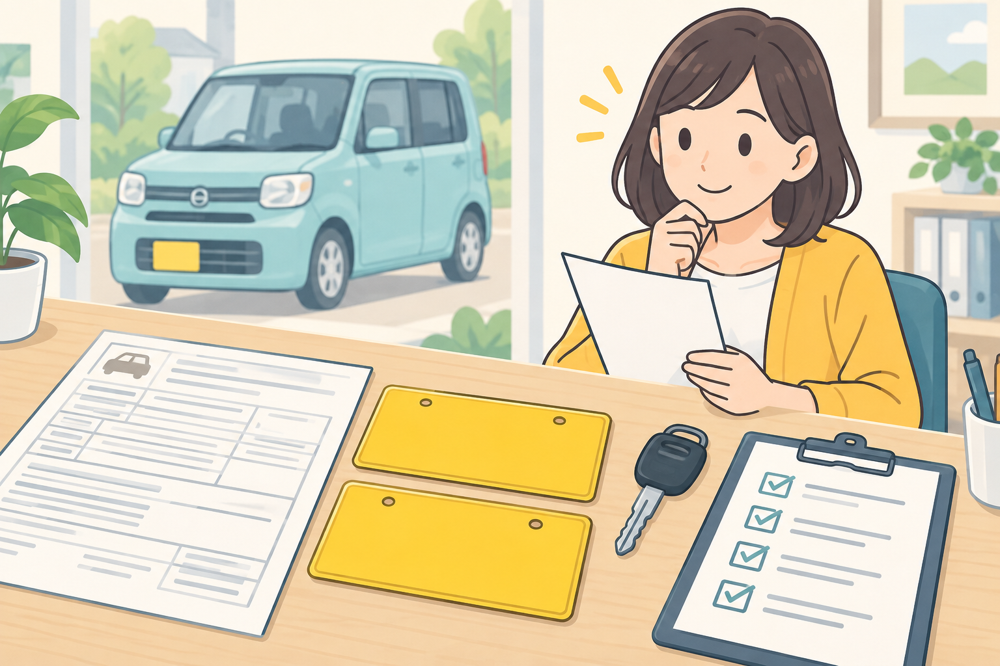
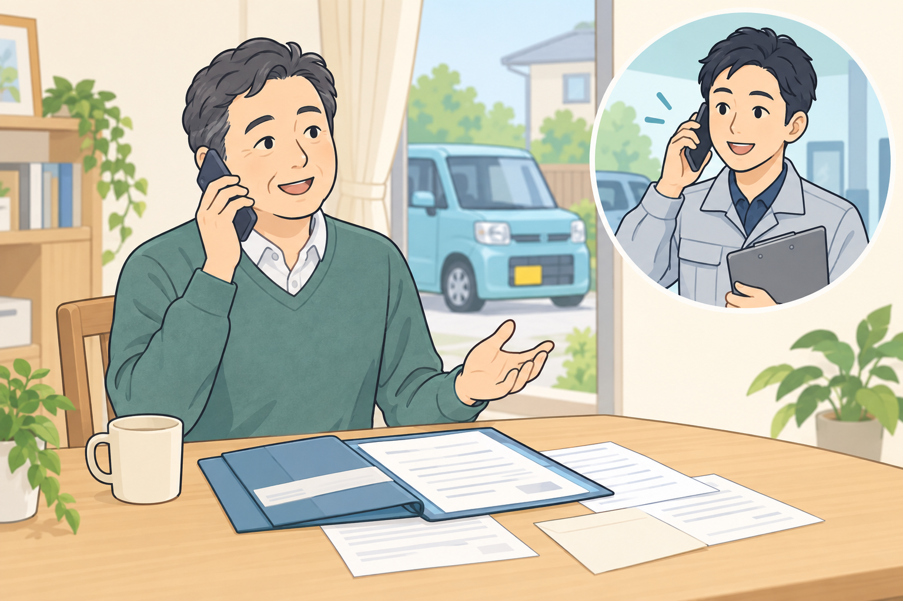
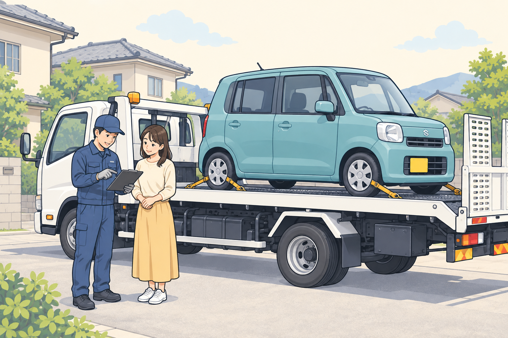

軽自動車の廃車をお考えの方へ
軽自動車の廃車に必要な
書類・準備チェックリスト
はじめに
「軽自動車を手放したいけど、書類は何が必要なんだろう……」
足立区周辺で車の処分をお考えの方へ。この記事では、廃車の相談前に確認しておきたいものと、書類が見つからない場合の対処法をご紹介します。
必要なものが揃っているかわからない場合も、まずは大崎商店にご相談ください。お車や名義の状況に合わせて、必要な準備をご案内します。
軽自動車の廃車で、まず確認したいもの

廃車をご相談いただく際は、まず次の2点をご確認ください。
- 車検証（自動車検査証）の原本
- ナンバープレート（前後2枚）
このほか、手続きの代行に必要な申請依頼書などをご用意いただく場合があります。必要書類は手続きの内容によって異なりますので、ご相談時にご案内します。
車検証は何のために必要？
車検証は、車両情報や所有者・使用者の情報を確認するための大切な書類です。コピーではなく、原本があるかをご確認ください。
車の所有者がご家族や販売店、ローン会社などになっている場合は、その旨もご相談時にお伝えください。
ナンバープレートはどうするの？
ナンバープレートは、廃車手続きの際に返納します。まずは前後2枚が車に付いているかをご確認ください。取り外しやお引渡しの方法は、ご相談時にご案内します。
相談前の準備チェックリスト
お電話の前に、わかる範囲で確認しておくとご案内がスムーズです。
- 車検証の原本がある
- ナンバープレートが前後2枚ある
- 車の所有者が誰か確認できている
- 車種や年式がわかる
- エンジンがかかるか、車を動かせるかがわかる
- 車の保管場所を伝えられる
すべて確認できていなくても、ご相談いただけます。 わからない項目や見当たらない書類があれば、そのままお伝えください。
車検証やナンバープレートが見つからない場合は？

「引っ越しのときに紛失したかもしれない」「長年乗っていなくて、どこにあるかわからない」という場合も、まずはご相談ください。
車検証やナンバープレートがない場合は、紛失したものや車の名義を確認したうえで、必要な手続きをご案内します。ナンバープレートを返納できない場合には、理由を記載した書類の提出が必要になります。
書類が見当たらないからといって、相談を諦める必要はありません。 お車の状態とあわせて、お電話でお知らせください。
廃車のご相談から引取りまでの流れ

- 電話で相談
車種・年式・お車の状態・保管場所・書類の有無をお聞きし、必要な準備や引取りについてご案内します。 - お車の確認・引取り
日程などを調整し、ご指定の場所へ伺います。環七店から車で片道約50分圏内を目安に、無料引取りに対応しています。対象になるかどうかは、ご相談時にご確認ください。 - 査定・買取、廃車手続きの代行
車種や状態に応じて査定し、買取となる場合はその場で現金をお支払いします。お引取り後の廃車手続きも当店が代行します。
こんな軽自動車もご相談ください
- 車検が切れて、長期間乗っていない車
- エンジンがかからない不動車
- 事故で動かなくなった車
- 車検証やナンバープレートが見当たらない車
- 年式が古く、処分に費用がかかるか心配な車
引取りの可否や方法は、お車の状態や保管場所などを確認してご案内します。「これも引き取ってもらえるのかな？」と迷ったときは、お気軽にお問い合わせください。
まとめ
軽自動車の廃車をお考えの際は、まず車検証の原本とナンバープレート前後2枚があるかをご確認ください。申請依頼書など、そのほかに必要な書類は、ご相談時にご案内します。
車検証やナンバープレートが見つからない場合も、状況に応じた手続きをご案内します。
足立区周辺で車の処分をお考えの方は、大崎商店へご相談ください。廃車手続きの代行手数料は無料。車種や状態によっては、その場での現金買取も可能です。
廃車・事故車のご相談は大崎商店へ
足立区周辺で車の処分をお考えの方は、まずはお電話ください。事故車や動かなくなった車の引き取り、必要書類などについてご相談いただけます。
電話で相談する 03-3854-4141大崎商店 環七店
電話：03-3854-4141
〒123-0872
東京都足立区江北7丁目1−3
営業時間：月〜土 10:30〜18:00
休業日：日曜・祝日
環七沿い／舎人ライナー
西新井大師西駅
大崎商店 入谷店
電話：03-3899-2837
〒121-0836
東京都足立区入谷7丁目5−11
営業時間：月〜土 9:30〜17:30
休業日：日曜・祝日・第2土曜
お電話の際は、「軽自動車の廃車について」とお伝えいただくとスムーズです。
挿絵はイメージです。※必要書類の説明は軽自動車検査協会の情報を参考にしています。